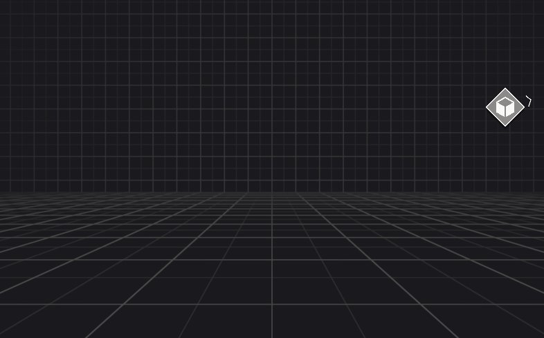

Overview
Target Indicators provides pixel-based screen coordinates for 3D world-space positions. These coordinates represent the screen-space projection of a target, even when it's off screen. If configured, the system clamps these screen coordinates to the edges of the display, indicating the direction to the target. This is useful in games or applications when guiding users to objectives or other points of interest that are not currently in the camera's view.
Beyond basic positioning, Target Indicators also offers contextual data about a target. Including, for example, the rotation required to point an arrow directly at the target in screen space, or whether the target lies outside a predefined screen boundary.

Main components
Target Indicators has four main components. Two are in the core package and calculate where indicators go on screen. The other two are in the Samples and display that information as UI. The core package doesn't depend on the samples, so you can replace the sample components with your own UI built with any UI system.
Core package
Target Indicator Manager
The Target Indicator Manager handles all tracked targets. It calculates the necessary data for positioning visual indicators on the screen. You can use it to manage the lifecycle events of indicators, receiving notifications when they change, or retrieve screen-space data directly for custom lifecycle control. This manager integrates with any UI system, as it solely focuses on converting world-space positions to screen-space coordinates.
Its configurable options allow you to define the boundary type, shape, and size, customizing the screen boundary for your application's requirements.
Target Indicator
A Target Indicator is the data structure generated by the target indicator manager that holds screen-space information for visualizing a tracked target. While it functions as a conceptual component within the system's design, a
TargetIndicatoris a C# struct, not a Unity Component that attaches to GameObjects.This struct contains relevant information about a tracked target, such as the screen pose (coordinates and rotation), the target it's tracking, and if it's outside the configured boundary.
Samples
Visual Indicator Manager
The Visual Indicator Manager connects the target indicator manager to the UI. It listens for target indicators being added, updated, and removed, and creates, positions, and removes a visual indicator for each one. In
Automode it uses the same prefab for every target, and inManualmode you choose a prefab for each target. TheCompassTapeVisualIndicatorManagerdoes the same for compass tapes.Visual Indicator
A Visual Indicator is the UI element you see on screen for a target, built as a prefab with the
VisualIndicatorcomponent. The includedVisual Indicatorprefab shows an icon over the target, an arrow that points toward it when it's off screen, and the distance to it. Its settings control when each part is visible. You can customize the prefab or replace it with your own. Compass tapes use prefabs with theCompassTapeVisualIndicatorcomponent.
Target indicators and visual indicators
The target indicator manager doesn't draw anything on screen. It calculates the data, and the visual indicator manager or your own UI displays it. This documentation uses two terms to keep these apart.
| Target indicator | Visual indicator | |
|---|---|---|
| What it is | The data calculated for a tracked target, such as where it is on screen and which way an arrow should point. | The UI element on screen that displays a target indicator, such as an icon with an arrow. |
| Created by | The Target Indicator Manager, for each target you add. | The Visual Indicator Manager, or your own UI code. |
| Where it lives | The core package. It's a C# struct, not a GameObject. | The samples, as a prefab instantiated under a Canvas. |
To set up a working scene with these components, follow Get started.